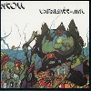
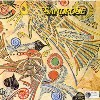
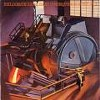

#フランスのイエスとか言われてたバンドの最高傑作といわれてる2枚目です。
言われてるほど「イエス」って感じはしてなくて、「バイオリンの入ったプログレバンド」って印象です。演奏は密度濃くってかっちょいいですけど、このボーカルはあまり好きじゃないです、叙情たっぷりに歌われてもなぁ・・・
バイオリンが入ってジャズロックみたいに疾走するよなパートはかっちょいいです、J.Luc Pontyみたい。

- Le Photographe Exorciste (悪魔払いのフォトグラファー)
- Cazzote No.1
- Le Voleur D'extase (恍惚の盗人)
- Imaginez Le Temps (思考時間)
- L'araignee-Mal (夢魔)
- Les Robots Debiles (狂った操り人形)
- Le Cimetiere De Plastique (プラスチックの墓碑)
- Andre Balzer (vocals)
- Christian Beya (guitars)
- Alan Gozzo (drums,percussions)
- Richard Aubert (violin)
- Michel Taillet (keyboards)
- Jean-Luc Thillot (bass)
KING RECORDS/CRIME: KICP-2712 (original release 1975)
#フランスの1972年、メロトロンたっぷりです。
特別フランスっぽい感じはしないです、泣きのギターとちょっとブルースっぽい曲調で女性ボーカルが乗っかります。CRESSIDAのボーカルが女性だったらこんな感じかな。
突出して何か面白い所は無いんですけど、プログレ好きでメロトロン好きなら盛ってて損は無いクオリティとは思います。

- Vision
- Never Good At Sayin'Good-Bye
- Underground Session (Chorea)
- Old Dom Is Dead
- To Take Him Away
- Summer Is Yonder
- Metakara
- Fraulein Kommen Sie Schlaffen Mit Mir
- Rose Podwonjny (vocals)
- Jean-Pierre Alarcen (guitars)
- Henri Garella (organ,mellotron)
- Michel Julien (drums,percussions)
(1972)
#フランスのRobert FrippのフォロワーでエレクトロのRichard Pinhasのユニットです。コレは1976年の5枚目です。
昔「Heldon最高傑作」ってアオリにつられて7枚目の「Stand By」を買ったのですけど、いまいちピンと来なくって売っちゃってます。というかコッチの方が個人的には好みです。
昔のシンセ(moogとか)のシーケンスの上にRobert Frippのギターソロ部分を拡大解釈したよーなギターがうねってます。インダストリアルとして聴いてもテクノとして聴いてもイケルよな感じ、特にボーナストラックの6曲目のライヴが好きです。
このアルバムではFrancois Augerって人がドラム叩いていて、コレが良いアクセントになっててとても格好良いです。一瞬ノイバウテンみたいな感じになったり。後は5曲目に元MAGMAのJanick Topがベースを弾いてます。
プログレでエレクトロというとドイツ勢が多いですけど、ドイツ物のLo/Fiな感じじゃなくってもっと重苦しいような感じです。面白かった。(2004.1.16)

- Marie Virginie
- Elephanta
- Perspective 4ter Muco
- MVC2
- Toward The Red Line
- Marie et Virginie Comp
- Richard Pinhas (guitars,electonics)
- Francois Auger (drums)
- Patrick Gauthier (mini-moog on 1.)
- Diedier Batard (bass on 4.)
- Janick Top (bass on 5.)
KING RECORDS/CRIME: KICP-2724 (1976)